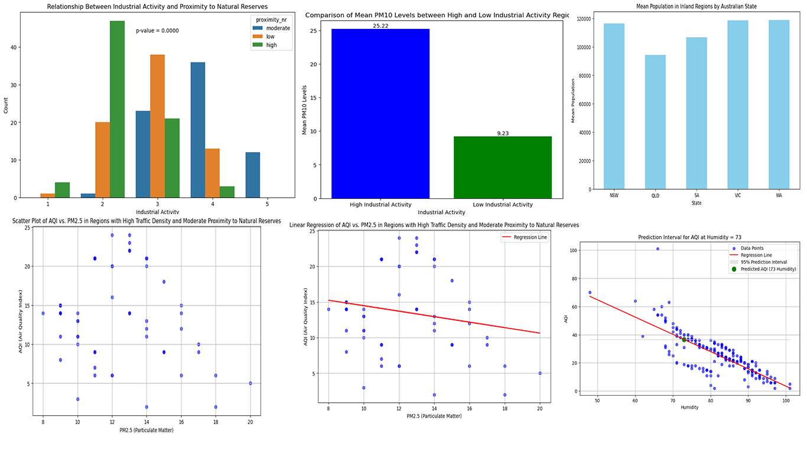

Supply Chain Analysis Project
I'm excited to share with you a recent project that I've completed – a supply chain analysis project that explores key insights into the world of logistics and product management. This project delves into various aspects of supply chain management, including revenue analysis, product type sales, transportation cost analysis, defect rate examination, and more. I'm thrilled to provide you with a glimpse of this project's key highlights.
Project Overview
In today's fast-paced business landscape, efficient supply chain management is more critical than ever. This project aims to shed light on the intricate details of supply chain operations for a Fashion and Beauty startup. Here's a brief overview of what I've explored in this analysis:
Revenue Generation by Product Type
I examined how product types, particularly skincare, haircare, and cosmetics, impact revenue generation. The findings revealed that skincare products play a pivotal role in revenue, with higher-priced skincare items contributing significantly to the bottom line.
Sales by Product Type
The project provides insights into sales by product type, allowing us to identify which product categories drive the majority of business.
Transportation Cost Analysis
Analyzing shipping costs by different carriers, we discovered how carrier choices can influence the bottom line. A particular emphasis was placed on Carrier B, which proved instrumental in generating higher revenue.
Inventory and Defect Rate
We examined stock levels for each SKU to assess inventory management. Additionally, the project delves into the average defect rate for all product types, highlighting the importance of maintaining product quality.
Key Findings
The project generated valuable insights, including the identification of top-performing SKUs, the discovery of revenue drivers, and the evaluation of transportation modes' defect rates. These findings can guide decision-making, enabling businesses to optimize their supply chain operations and boost profitability.
Recommendations
Based on the analysis, I've developed recommendations to enhance supply chain efficiency. These recommendations encompass strategies to reduce costs, improve quality control, optimize inventory levels, and choose the right transportation modes.
Conclusion
Effective supply chain analysis can provide businesses with a competitive edge in today's dynamic market. This project demonstrates the importance of data-driven decision-making and the potential for enhancing supply chain efficiency to drive success.
Feel free to explore the detailed analysis and findings presented in this project. I'm always eager to discuss how data-driven solutions can drive your business forward.
Thank you for visiting my portfolio and considering my work. If you have any questions or would like to discuss collaboration opportunities, please don't hesitate to Contact me!

Air Quality Data Analysis
I'm excited to share one of my recent data analysis projects: the Air Quality Data Analysis. In this project, I delved into a dataset related to air quality, with the goal of understanding the factors that influence air quality and their impact on the environment.
Project Overview
Data Source: I worked with a comprehensive dataset containing various attributes, including industrial activity, proximity to natural reserves, pollution levels (PM10 and PM2.5), traffic density, distance to the coast, humidity, and more.
Key Insights and Visualizations
-
Industrial Activity and Proximity to Natural Reserves: To investigate the relationship between industrial activity and proximity to natural reserves, I created a contingency table and performed a chi-squared test to determine whether the two variables are dependent.
-
Mean PM10 Levels: I compared mean PM10 levels in regions with high industrial activity (industrial codes 4 and 5) and low industrial activity (industrial codes 1 and 2). The analysis revealed significant differences between the two groups.
-
Difference in Mean PM2.5 Levels: I conducted a two-sample t-test to compare mean PM2.5 levels between regions with high traffic density and low traffic density. The results provided insights into the impact of traffic on air quality.
-
Mean Population in Inland Regions: I analyzed the mean population in inland regions by Australian state and performed a one-way ANOVA to test for significant differences among states.
-
AQI vs. PM2.5: Using a scatter plot and linear regression, I explored the relationship between Air Quality Index (AQI) and PM2.5 levels, providing a predictive model and a prediction interval for AQI.
Technologies Used
- Python for data analysis
- Pandas for data manipulation
- Matplotlib and Seaborn for data visualization
- Jupyter Notebook for analysis and visualization
Conclusion
The Air Quality Data Analysis project highlights the significance of data-driven insights in understanding environmental factors affecting air quality. By employing statistical tests, visualizations, and regression models, I gained valuable insights into the data, which can inform environmental policies and decision-making.
If you have any questions or are interested in collaborating on similar data analysis projects, please don't hesitate to contact me. Thank you for exploring this project in my portfolio!
Pizza Sales Analysis Using Power BI
As a data analyst, I love diving into data and extracting valuable insights. In my recent project, I used the powerful tool Power BI to analyze pizza sales data. This project allowed me to showcase my data analysis skills and create impactful visualizations.
Here are some key highlights of the project:
- Total Revenue Analysis
- Total Orders and Average Pizza per Order Metrics
- Average Order Value Calculation
- Monthly Sales Trends Visualization
- Sales Breakdown by Pizza Size
- Total Pizza Sold by Category
This analysis provided valuable insights into customer preferences and helped in making data-driven decisions for the pizza business. The project is available on GitHub for a more in-depth look: GitHub Project
Feel free to reach out if you'd like to learn more about this project or discuss data analysis opportunities.
I'm excited to showcase a recent project that highlights my skills in Business Intelligence and Data Analytics – the creation of a comprehensive Sales Report using SQL Server Reporting Services (SSRS). This project aims to provide detailed insights into daily sales, utilizing the AdventureWorks2017 database.
Project Overview
Tools Used
- Visual Studio 2015
- SQL Server Reporting Services (SSRS)
- SQL Server Integration Services (SSIS)
- AdventureWorks2017 Database
Objectives
- Develop a dynamic Sales Report with a user-friendly interface.
- Utilize SSIS for data cleaning and transformation.
- Implement SSRS for visually appealing and insightful data representation.
Project Highlights
Visual Studio Integration
I initiated the project by creating an SSRS project in Visual Studio 2015, seamlessly integrating it with the AdventureWorks2017 database. This laid the foundation for a robust reporting system.
Data Cleansing with SSIS
Addressing the challenge of incorrect data, particularly in fields like City, StateProvinceCode, and CountryCode, I leveraged SSIS to perform data cleaning and transformation. Conditional Splits and Derived Columns were pivotal in ensuring data accuracy.
SSRS Report Design
The heart of the project lies in the design of the SSRS report. Daily sales details, including Order ID, Product Name, Unit Price, Quantity, and Total Amount (Inc. Tax), are presented in a visually appealing layout. I also addressed formatting issues for Unit Price and Order Date, ensuring a polished user interface.
GitHub Repository
For those interested in exploring the project in-depth, I've made the entire codebase available on GitHub. Feel free to check it out and provide feedback.
Future Developments
The project is an ongoing endeavor. Future developments include integrating the report with a Staging_Area for continuous data updates and further enhancements to create a comprehensive Business Intelligence solution.
Conclusion
The Sales Report project has been a stimulating journey, pushing the boundaries of my skills in SSIS and SSRS. It reflects my commitment to delivering impactful solutions that empower businesses with valuable insights.
Thank you for exploring this project with me!
Excited to share a recent project where I delved into COVID-19 data using SQL queries! 🤓 Here's a snapshot of the key insights:
Death Analysis:
Explored death percentages based on total cases, offering insights into the virus's impact across different regions.
Infection Rates:
Calculated the percentage of the population infected with COVID-19, spotlighting countries with the highest infection rates relative to their population.
Continent-wise Breakdown:
Analyzed death counts per population for different continents, providing a global perspective on the pandemic's impact.
Global Numbers:
Shared comprehensive summaries, including total cases, total deaths, and death percentages, illuminating the overall pandemic scenario.
Vaccination Progress:
Integrated COVID-19 deaths with vaccination data to track the percentage of the population that has received at least one COVID vaccine.
🔗 If you're curious about the details and want to explore the full analysis, check out the project on my GitHub profile. Let's stay informed and work towards a healthier world together! 💙 #DataAnalysis #COVID19 #PublicHealth #Vaccination
Hello everyone!
I'm excited to present my latest project: a comprehensive data analysis of COVID-19 trends using Tableau.
In this project, I've delved into global statistics, continent-wise insights, and country-level trends to create an interactive and informative dashboard.
Dashboard Highlights:
- Global Overview: Total cases, deaths, and death percentage.
- Continent-wise Insights: Visualizing total death counts across different continents.
- Worldwide Infection Map: Exploring the percentage of population infected globally.
- Country-level Trends: Analyzing infection percentages for Australia, China, India, UK, US, Nepal, and more.
- Future Forecast: Predicting infection percentages over the next two years.
Explore the Dashboard:
Covid Dashboard on Tableau
Project Resources:
GitHub Repository
Acknowledgments:
A special thank you to Our World in Data for providing valuable insights.
Join the Data Exploration:
I invite you to explore the dashboard and dive into the nuances of COVID-19 data.
Let's spread awareness through data visualization and contribute to understanding the impact of the pandemic.
Feel free to share your thoughts and insights. Let's use data to navigate these challenging times and work towards a healthier future.